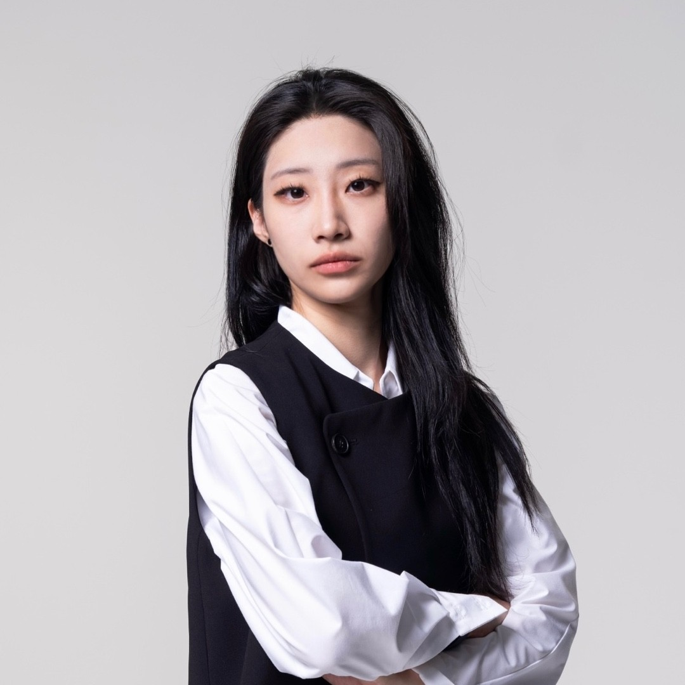
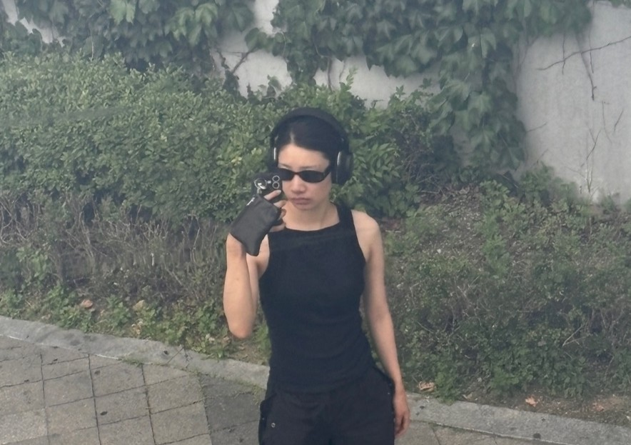
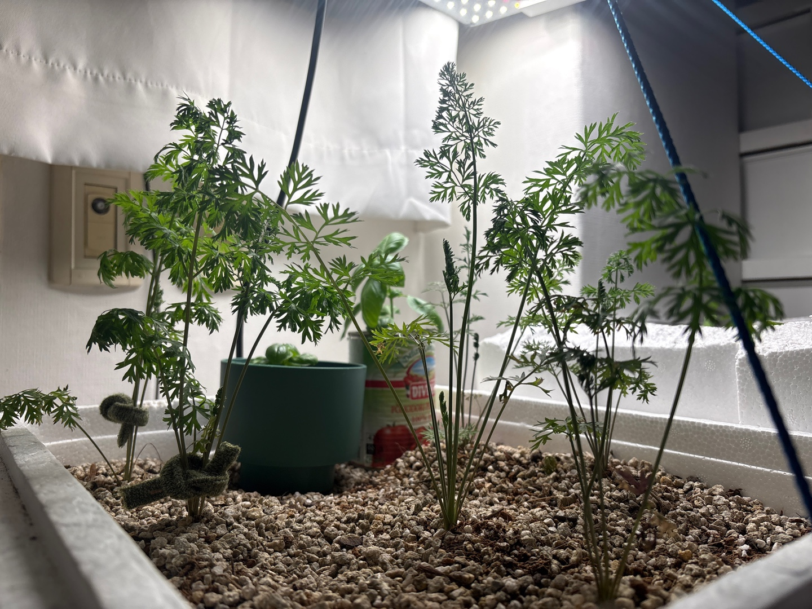
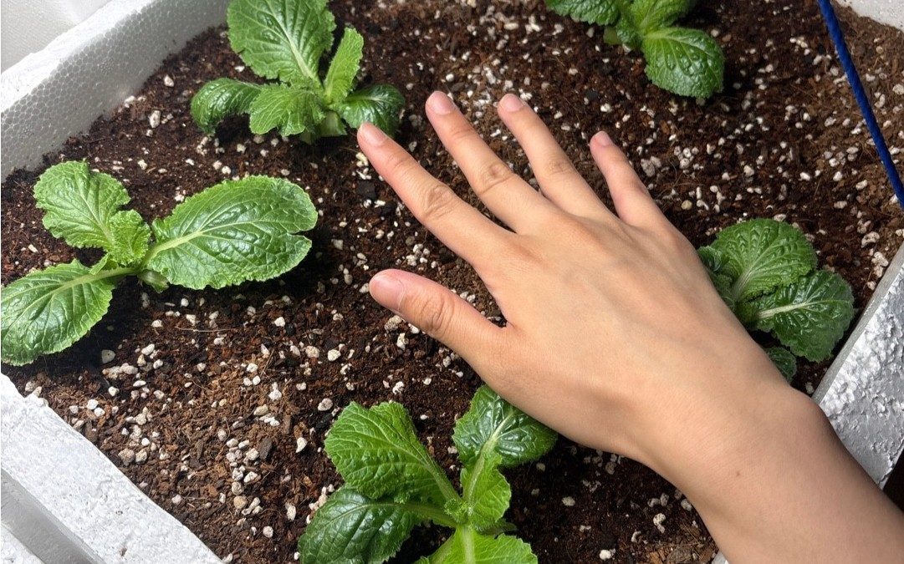
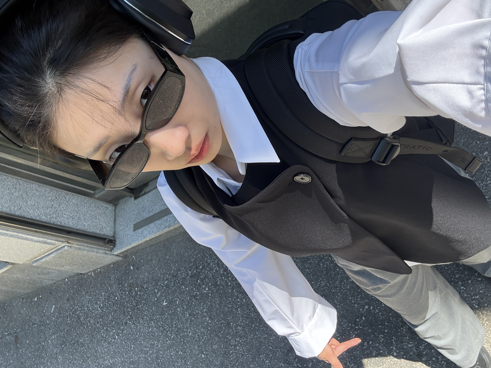
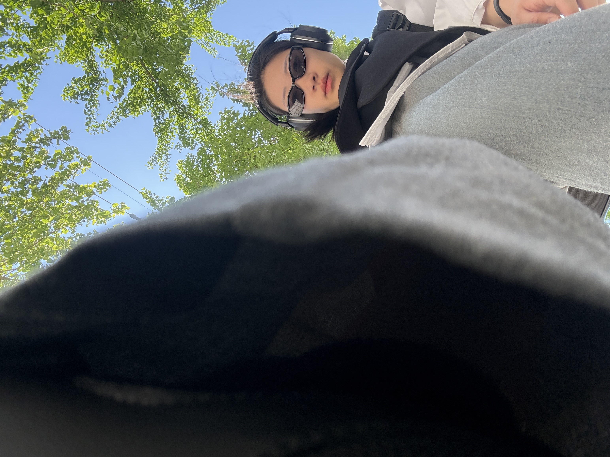
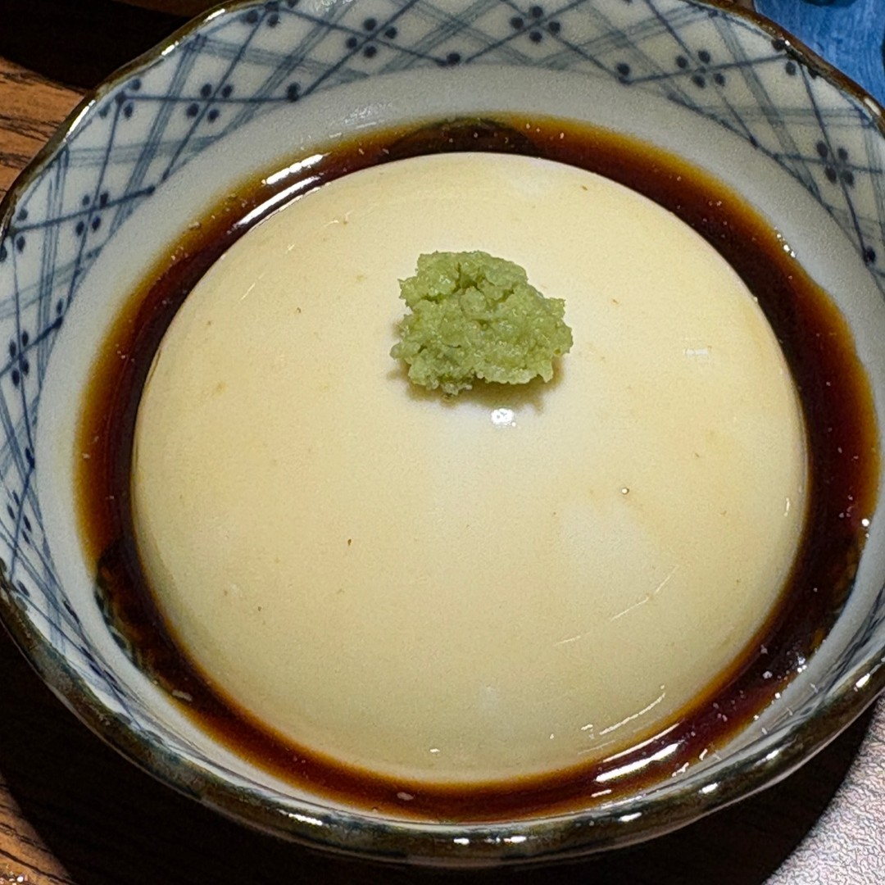
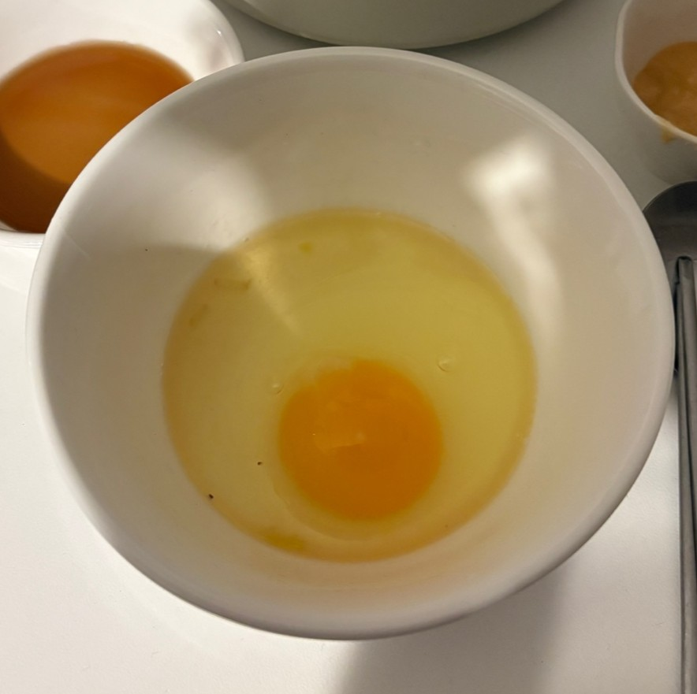

안녕하세요.
동그라미를 좋아하는 0다0입니다.

공다영 (01.04.20)
01 / Introduction
🏠한밭대 남문 주변에서
1년 간 임시거주합니다.
남문 근처 맛집 추천해주시면 감사하겠습니다...
남문 바로 코앞이에요.

정말 주변에 아무 것도 없다...
02 / Major : Visual Design
웹도, 책도, 게임도 이것저것도 만들곤 했었습니다...
🎨시각디자인을
전공했습니다.
서비스를 기획할 때 남들과는 조금 다른 접근이 가능하리라
기대하고 있습니다. 싸피에서의 활약 응원해주세요...
03 / Companions : Cats
🐱본가에 두고 온,
언제나 그리운 고양이 두 마리
페르시안은 '콩이' 코리안숏헤어는 '보리' 입니다.
둘은 사랑을 받기 위해 경쟁하면서도 서로 의지하는 사이입니다.
첫 번째 고양이 콩이
두 번째 고양이 보리
04 / Hobby : Music

🎵Aphex Twin
Ageispolis
🎧헤드셋 끼고
음악을 감상해요
장르 상관없이 폭 넓게 듣자 주의여서
음악추천도 기꺼이 받습니다!
05 / Hobby : Plants
🌱소소한 취미인
당근,상추,바질 키우기
느리지만 꾸준하게 천천히 자라는 것을 보면서
힐링하고 힘을 얻습니다.


06 / Style Signature


🕶️눈부심이 싫어서
선글라스를 주로 착용해요
싸피에 선글라스를 끼고 오긴 그래서
선글라스 낀 모습을 보여드리진 못하겠지만...
07 / Circle
제가 가장 좋아하는 도형은,
노란색 동그라미.
일상에서 동그란 물건을 만나면
기분이 좋아져요.


공다영에 대해 더 궁금하다면?
앞으로 잘 부탁드립니다! 끝까지 봐주셔서 감사합니다.
010-5462-2624